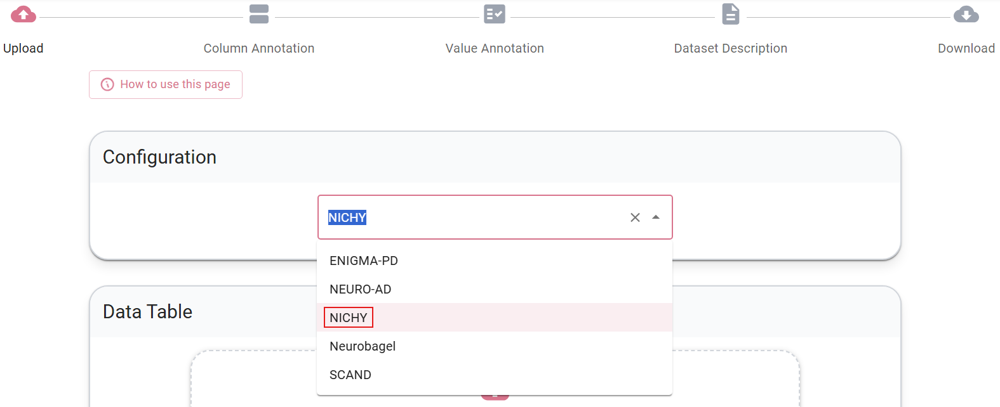

NICHY Data Annotation with Neurobagel
Why this matters
The NICHY consortium aims to collect diverse clinical data across sites to maximize the depth and breadth of our analyses. To combine data effectively, we need a consistent way to interpret variables and ensure all sites are "using the same language". The Neurobagel annotation tool provides a structured, user-friendly way to standardize how we describe clinical data, making it easier to understand what each variable means across the consortium.
As we grow and collect more standardized annotations, we hope to eventually make it easier for NICHY to discover data availability across sites for ongoing and future projects.
1. NICHY Custom Variable List
NICHY has compiled a curated list of variables relevant to central disorders of hypersomnolence. The list covers key domains including demographics, clinical profiling, medication use, (comorbid) diagnoses, validated questionnaires, specialized sleep assessments (PSG, MSLT, actigraphy), and fluid biomarkers.
Expanding our NICHY variable list
We are still developing our NICHY variable list. If your site collects variables that other NICHY sites may also have, and that could be valuable for current or future NICHY projects, please provide suggestions to add them in the second tab of the spreadsheet.
Check out the NICHY variable list here!
2. Annotation using Neurobagel
With the NICHY vocabulary integrated into the tool, sites can annotate their spreadsheets in a structured and intuitive way.
Privacy note
Although the annotation interface is a web app, it runs entirely on your computer and Neurobagel does not upload any data or retain data. Your data are used only to populate the annotation interface (read columns and possible values).
Step-by-step
- Go to https://beta-annotate.neurobagel.org/.
- Select NICHY as configuration.

- Upload a TSV file containing demographic and clinical variables. If you still need to convert your data from CSV or Excel, see the Neurobagel documentation on TSVs. Note: Excel does not have a native TSV export option, but you can export as "Text (Tab delimited) .txt" and then rename the file extension to .tsv).
- Please annotate all clinical and demographic variables available in your dataset.
Item-level data is valuable
If your site has individual item scores available, we encourage you to share and annotate these alongside the total scores. For example, if you have the Epworth Sleepiness Scale (ESS), sharing the responses to each of the eight items provides more flexibility for future analyses. Item-level data allows for more detailed analyses across NICHY projects and may reveal patterns that total scores alone cannot capture.
- New to Neurobagel? Click through the introduction pop-ups when opening the tool.
Column annotation
Goal: Assign each column or group of columns to a standardized variable by clicking on them.
- Select multiple related columns at once using CTRL+click or SHIFT+click
- Can't find a column? Filter your column list using the search bar at the top left
- Can't find a variable? Use the search bar in the assessment tool list to narrow down options
- Note that variable names in the tool may not always match your local naming conventions, for example, what your site calls "disease duration" may be listed as "time since diagnosis". If a search does not return results, try alternative terms or synonyms. You can also browse the full NICHY variable list to get an overview of all available terms before annotating.
- If no variable fits your column, please use the description field to provide us with more context to understand this column
Note: value annotation for diagnosis
In the column annotation stage, please select the standard Neurobagel diagnosis column. When you move on to the value annotation stage, however, you may notice that narcolepsy and other disorders of hypersomnolence are not yet available in the list of disorders. We are working with the Neurobagel team to have these added. For now, please annotate the column as diagnosis but leave the individual levels empty (you may select "healthy control" for controls if those are present). At the end of the process the tool will warn you that some columns have incomplete value annotations. You can safely ignore this message and select "Let me download, I know what I'm doing!".
Value annotation
Goal: Review all columns annotated in the previous step and describe their values.
- Mark missing values. Neurobagel allows you to define missing values (such as -999, NA, empty strings, etc.) all at once for your entire spreadsheet. The tool will even suggest common missing value patterns it detects in your data. Once you define these, Neurobagel will apply them across all relevant columns, so you don't need to mark missing values individually for each variable.
- Optionally add short human‑readable descriptions for uncommon variables.
Dataset description
You can skip this step entirely (except for dataset name, since it is required). We will ask about some of these details (such as involved co-authors and a citation for the original study) later on, along with a few additional questions that are not covered here.
Sharing the data dictionary
- Done? Download the data dictionary and share them the file with the clinical data as explained on the data sharing page.
Questions and support
For questions, please reach out to the NICHY team and join the Neurobagel discord server for support.
Why this helps
- Produces a consistent, machine‑readable data dictionary for each cohort.
- Reduces human error compared to manual data dictionaries (if you make a mistake during annotation, you can simply load your data dictionary into the tool again and correct it)
- Makes datasets easier to understand, reuse, and combine.
Interested to learn more about Neurobagel? Check out the Neurobagel documentation here
Feedback from early adopters
- Annotation is straightforward and user‑friendly. It typically takes under an hour for a dataset of around 100 variables. And if you cannot finish in one go, you can always save your progress and continue later (to do this, skip to the end of the process and download the data dictionary, you can upload this file again next time when you want to resume). Don't close or refresh the page while annotating!
- The main time investment is the column annotation step, selecting the correct variable from the NICHY vocabulary.
- Overall experience: not difficult, but requires some attention to detail.
Add your feedback to improve the tool
The Neurobagel team continues to improve this tool together with us. If you have an idea for an improvement or find something difficult or confusing, please use the purple button "Give us feedback" on the right edge of the screen.
Summary
- Annotate your clinical spreadsheet using the NICHY variable list and Neurobagel tool.
- Reach out to the NICHY team and join the Neurobagel discord server for support.
- Share feedback on missing variables in the second tab of the NICHY variable list or usability improvements with the Neurobagel team, directly through the tool.